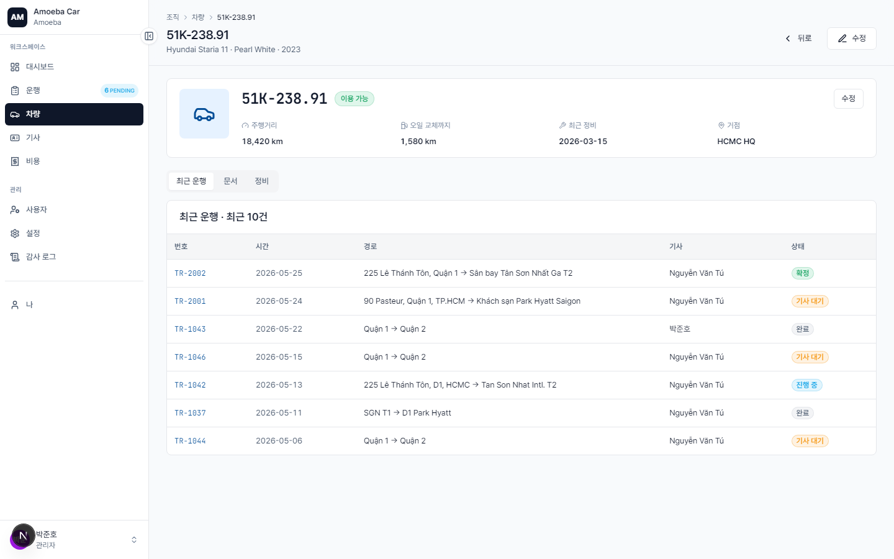

정비 알림 (Maintenance Alerts)
🌐
한국어 번역 진행 중 — 이 페이지의 본문 일부는 아직 베트남어입니다. 제목·사이드바·이미지는 한국어로 제공되며, 본문 번역은 점진적으로 업데이트됩니다. 급한 경우 베트남어 원문을 참고하세요.
- 트리거
- Cron tự động chạy hàng ngày 06:00 ICT — quét tất cả xe
- 표시 위치
- Hộp thư
/inbox+ banner trên card xe trong/vehicles - 처리 책임
- Admin (đặt lịch + ghi chi phí OIL/INSPECTION khi xong)
4 loại 알림
| Mã | Trigger | Mức độ |
|---|---|---|
OIL_DUE_SOON | Xe đã chạy ≥ 80% 엔진오일 교환 주기 (mặc định 4.000 km / 2.4 tháng) | WARNING |
OIL_OVERDUE | Xe đã vượt 엔진오일 교환 주기 | CRITICAL |
INSPECTION_DUE_SOON | Còn ≤ 30 ngày đến hạn 정기검사 | WARNING |
INSPECTION_OVERDUE | Đã quá hạn 정기검사 | CRITICAL |
Quy trình xử lý
1
Mở /inbox hoặc /vehicles, xác định xe có alert (icon ⚠ trên card xe).
2
Liên hệ 기사 phụ trách xe → xếp lịch mang xe đi gara/trung tâm 정기검사.
3
Đổi trạng thái xe sang MAINTENANCE trong /vehicles/[id]/edit để chặn gán 운행 mới.
4
Sau khi xong, ghi chi phí loại OIL hoặc INSPECTION tại /expenses/new — chọn đúng xe.
5
Hệ thống tự động:
- Reset chu kỳ bảo dưỡng (đếm km/ngày từ 0)
- Đánh dấu 알림
RESOLVEDtrong hộp thư - Cron hôm sau không gửi lại alert cho đến chu kỳ tiếp theo
6
Đổi trạng thái xe về AVAILABLE để 기사/Manager có thể đặt 운행 lại.

Cấu hình chu kỳ bảo dưỡng
Mỗi xe có thể cấu hình riêng tại /vehicles/[id]/edit:
- Chu kỳ dầu (km) — mặc định 5.000 km
- Chu kỳ dầu (tháng) — mặc định 3 tháng
- Chu kỳ 정기검사 (tháng) — mặc định 12 tháng (xe ≤ 7 năm) / 6 tháng (xe > 7 năm)
⏰
Idempotency window: Cron không gửi alert trùng trong vòng 24 giờ. Tránh spam khi cron chạy nhiều lần/ngày.